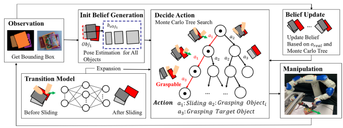
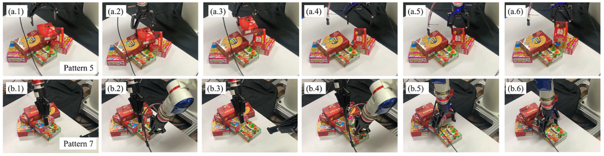

Our method uses a neural network to predict the physical phenomena of the clutter when the target object is moved. We generate the most efficient action based on the Monte Carlo tree search.
The grasping and sliding actions are planned to minimize the number of motion sequences to pick the target object. Experiments with a real bimanual robot confirmed that the robot could retrieve the target object, reducing the total number of motion sequences and improving safety.
